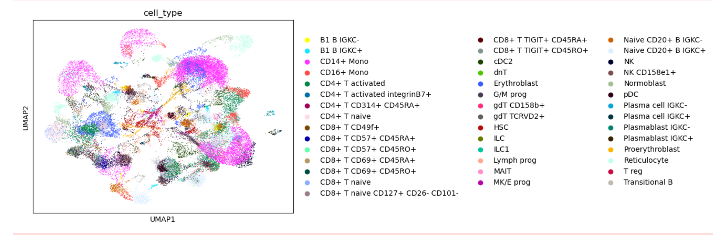

Gene Expression Regression from CITE-Seq data
This project was completed for a computational modeling class in the spring of my senior year. We were provided over 13000 RNA (gene expression) and 134 antibody-derived tags (protein) counts for over 65000 cells. The data was collected using the CITE-Seq RNA sequencing technique and was pre divided into training and testing sets. The training set also included metadata including things like cell type and batch information. The goal was regression ie. to build a model that given gene expression information for a cell could predict the protein count for that cell accurately. The data came with some preprocessing techniques applied including filtering cells (by mitochondrial gene count, gene count, and gene variety), normalization with respect to cell size, and log+1 transformation. These methods were described in this 2019 paper. I tried “regressing out” the batch effects, cell phase effects, and mitochondrial gene rate using ScanPy as the paper also described. However, for reasons I describe in my longer writeup these failed to improve model accuracy so the transformation was not used by my final model. Next I used Truncated SVD to reduce the RNA features to under 100 features.
At this point I knew that fitting a Boosted Tree or a Neural Network would likely be sufficiently accurate models. But upon looking at a dimension reduced visualization of the gene expression data. I had a different idea, the cells were heavily clustered by cell type, and I thought each cell type might have a more similar protein count to RNA count ratio than other cells with similar gene expression data. I decided to try to classify each cell by its type and then use a unique OLS regressor for each cell type to predict each individual cell’s protein counts. To test this method, I grouped the training dataset by cell type then made a temporary testing subset. I fit a regressor for each cell type with more samples in the training subset than the number of dimension-reduced features, otherwise I simply predicted the mean protein counts within that cell type. Overall this cell type based regression approach outperformed a single OLS regressor. Based off this insight, I programmed a model that used the K-nearest neighbors approach to predict the cell-type of a cell and then use an associated OLS regression model for that cell type. This model still outperformed the single OLS regression model but not by as much as I had hoped.
So I decided to test another idea: I had hoped that providing the additional information of cell type during training would allow my model to make better predictions. But now I thought that this information probably wasn’t helping but that basing my predictions off the most similar points rather than all the points probably led to most of the improvement. So I changed my classification method from a KNN classifier by cell-type to an unsupervised K-means model. This model outperformed the KNN model and its accuracy seemed sufficient. Both a boosted-tree and a Neural Network model may give better accuracy than the two models that I came up with. However, my models had the advantage of being linear and therefore having directly interpretable coefficients. You can read a more complete write up of this project here.
